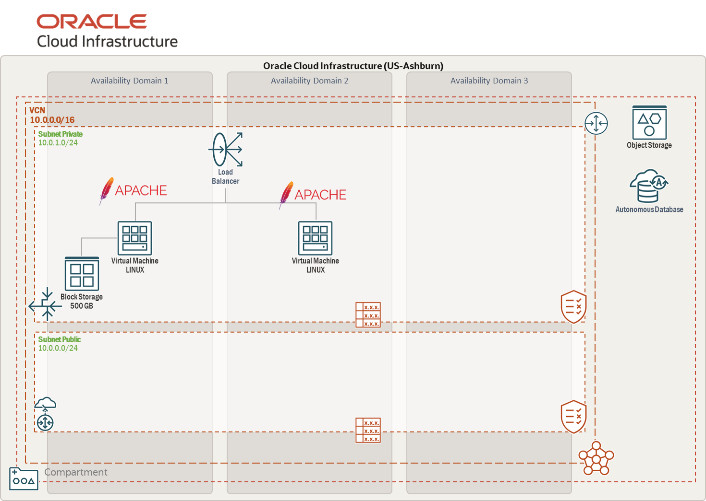

Sobre este Workshop
Oracle Cloud Infrastructure (OCI) Fast Track es un taller práctico diseñado para aquellos que desean aprender a trabajar con la nube de Oracle desde cero. Durante este taller, cubriremos todos los conceptos básicos relacionados con la infraestructura en la nube, y el resultado final será adquirir conocimientos sobre equilibradores de carga, máquinas virtuales, almacenamiento y Bases de Datos Oracle Autonomous Database. Exploraremos cada uno de los recursos disponibles en Infraestructura como Código (IaaS), desde redes y almacenamiento hasta máquinas virtuales y equilibradores de carga. Para comenzar, es importante asegurarse de que el usuario tenga una comprensión clara de los componentes básicos de OCI, como Regiones, Compartimentos y Dominios de Disponibilidad.
Nuestro objetivo es que, al final de este taller, es que puedas implementar tus propias infraestructuras siguiendo las mejores prácticas de OCI.
Arquitectura objetivo:
Objetivos de aprendizaje
- Entender la estructura de OCI: regiones, dominios de disponibilidad y compartimentos.
- Diseñar y desplegar redes con VCN, subnets, rutas, listas de seguridad/NACL.
- Crear y administrar Compute (VMs) y Block Volume.
- Trabajar con Object Storage y políticas de acceso.
- Configurar Load Balancer para alta disponibilidad.
- Provisionar y conectarse a Autonomous Database.
- Aplicar principios de seguridad básica y organización por compartimentos.
Configuración del ambiente de laboratorio
Oracle Cloud, a través de su plataforma Live Labs, te ofrece la oportunidad de realizar este workshop en el entorno que más te convenga: ya sea en un ambiente sandbox, preparado especialmente para practicar sin riesgos, o en tu propio ambiente, aplicando directamente lo aprendido. Solo debes seleccionar la guía de configuración que mejor se ajuste a tus necesidades, y así avanzar paso a paso de manera clara y guiada.
Guía paso a paso para usar el sandbox de LiveLabs. Configuración en tu propio ambiente OCI
Prepara tu tenancy y credenciales en OCI.
Laboratorios
Certificación en OCI
Este Fast Track te prepara para iniciar tu camino en OCI y puedas avanzar con rutas de certificación oficiales de Oracle Cloud Infrastructure. Recomendadas:
- OCI Foundations Associate — conceptos base de OCI.
- OCI Architect Associate — diseño de soluciones en OCI.
- OCI Architect Professional — arquitectura avanzada y mejores prácticas.
Consulta los detalles y prerequisitos en la página oficial de certificaciones de Oracle (búsqueda: “Oracle Cloud Infrastructure Certification”).